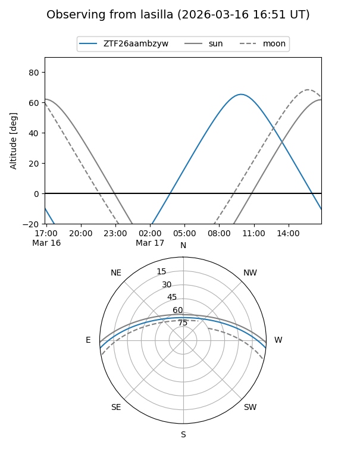
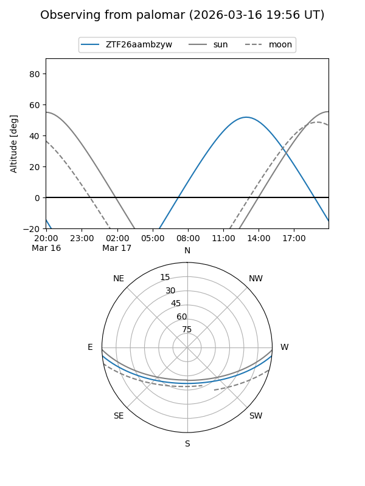

ZTF26aambzyw
Target ZTF26aambzyw at 2026-03-16 13:35
Aliases and brokers:
FINK: link
Lasair: link
ALeRCE: link
alt names
ZTF26aambzyw (ztf,fink_ztf)
Coordinates:
equatorial (ra, dec) = 252.3924,-4.65036
equatorial (HMS+DMS) = 16:49:34.18,-04:39:01.28
galactic (l, b) = (13.5280,+24.38133)
Flags:
Photometry:
last ztfg=17.30
1 ztfg detections
Lightcurve
Visibility


Additional plots